Özünde Frejya
Verimli kullanmanın özü
Üye olduktan sonra birini bulmanın iki yolu var. Detaylı aramada kişilik ve uyum ölçütlerine göre süzer, sana en yakın kişileri bulursun. Ya da sosyal akış Aura'da kelimelerle değil, kendi ikon aramamızla ararsın: tam o an seninle aynı aktiviteyi yapan ya da aynı hobiyi paylaşan kişileri bulur, onları takibe alırsın.
Her şey takiple başlar — hem aramada hem akışta. Takip ettiklerinden seninle hâlihazırda sohbeti olanlar listeni meşgul etmez; sohbete müsait olanlar İzleme ekranına düşer ve sana anında bildirim gelir. Böylece doğru anı kaçırmadan, tam müsait olduklarında konuşmaya başlarsın.
Frejya'da aynı anda tek kişiyle konuşursun — ama mesele tek olması değil, nitelikli olması. Herkesle dağınık, boş bir muhabbet yerine yalnızca gerçekten önemsediğin kişileri takibe alırsın. Onlar müsait olunca buluşur, tüm dikkatini tek bir insana verirsin. Ne zamanını harcarsın, ne ilgini her yere bölersin.
Az kişi, çok dikkat. Boş bir kalabalık değil — nitelikli tek bir bağ.
01 Kayıt ol
Yaş 18+ · E-posta · Takma adFrejya'ya kayıt olmak için e-postan ve 18 yaş üzeri olduğunu doğrulayan bir onay yeterli. Gerçek adın yerine bir takma ad seçersin — Frejya'da kimse seni gerçek adınla görmez.
- Cinsiyetini seçersin (kadın / erkek) — eşleşme havuzunu belirler.
- Doğum tarihini girersin; uygulama yalnız yaşı tutar, tarih başka kullanıcıya gösterilmez.
- İstersen davet kodu yazarsın — seni davet edene 1 ay Premium hediye edilir (sen ücret ödemezsin).
- Uygulamayı kullanmadan önce Kullanım Şartları ve Gizlilik Politikası'nı görmen gerekir.
- Biyometrik giriş: İlk girişinden sonra Frejya, bir dahaki sefere parmak izi veya Face ID ile şifresiz girmeyi teklif eder. Kabul edersen sonraki açılışlarda saniyede girersin; istemediğin açılışta ekranı yana kaydırıp şifrenle girersin. Profili Düzenle'den istediğin an kapatabilirsin.
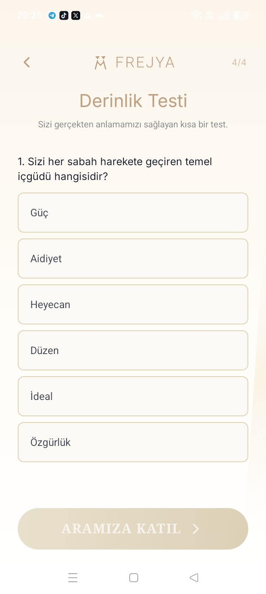
02 Profilini oluştur
Hayvan avatarı · Psikoloji testi · SesFrejya'da profilin bir fotoğraf değil, bir karakterdir. Üç katmandan oluşur:
- Ruhani hayvan avatar: 100'lü hayvan avatarından sana en yakın hissedeni seç. Aura akışında, sohbet listende ve mesajlarda bu avatar görünür.
- Psikolojik derinlik testi: 5 soruluk ~3 dakikalık test, eşleşme algoritmasının seninle uyumlu karakter tiplerini bulması için temel veridir. Her 30 günde bir yenileyebilirsin — insanlar zaman içinde değişir, eşleşmen de seninle birlikte tazelenir.
- Maskelenmiş ses tanıtımı (opsiyonel): 1 dakikalık bir ses kaydı yapabilirsin. Frejya sesini perdeleyerek yayınlar — karşı taraf seni tanıyamaz ama ses tonunu hisseder.
- Kısa biyografi (opsiyonel): İstersen kısa, sembolik bir tanıtım metni eklersin. Eklemezsen profilin sembollerle konuşur.
Profil bilgileri — yaş aralığı tercihi, şehir, meslek, ilgi alanları, beş kelimelik öz tanım — eşleşme algoritmasının kullandığı veridir. Ne kadar dolu doldurursan eşleşme o kadar isabetli olur.
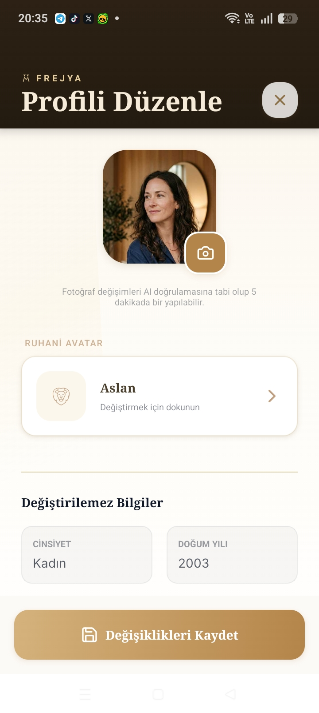
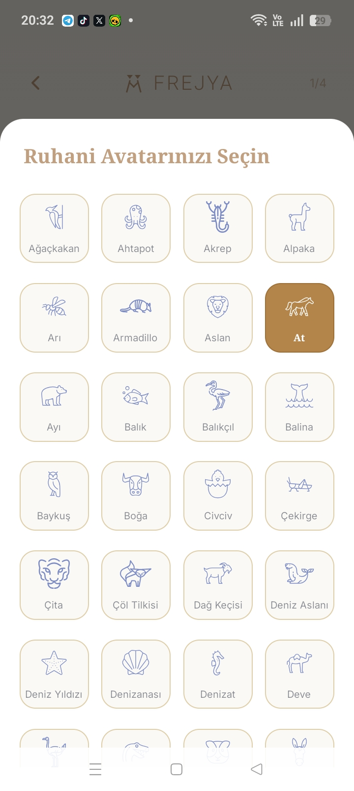
03 Fotoğraf onayı
Yapay zekâ doğrulaması · Sahte profil yokİnsan, bir fotoğraftan büyüktür. Frejya'ya gerçek bir yüz fotoğrafı yüklemen gerekir; ancak bu fotoğraf eşleştiğin kişiye doğrudan gösterilmez — perdenin arkasında kalır ve sohbet ettikçe yavaşça açılır.
- Yüklediğin fotoğraf yapay zekâ tarafından incelenir: gerçek ve net bir insan yüzü görünmeli, beyan ettiğin cinsiyetle uyumlu olmalı, çıplaklık veya 18 yaş altı içerik olmamalı.
- İnceleme genelde birkaç dakika sürer; sonuçta "Onaylandı" veya "Yeniden dene" mesajı görürsün. 5 dakikayı aşarsa uygulama fotoğraf onayı bekleme ekranına düşer.
- Reddedilirse açıklama gösterilir; 5 dakika arayla, günde 5 ve ayda 20 deneme hakkın vardır. Art arda 5 redde fotoğraf yükleme 1 gün kapanır.
- Onaylanmamış kullanıcı eşleşmelerde görünmez ve mesaj atamaz — bu, herkesin gerçek olduğundan emin olmanın yoludur.
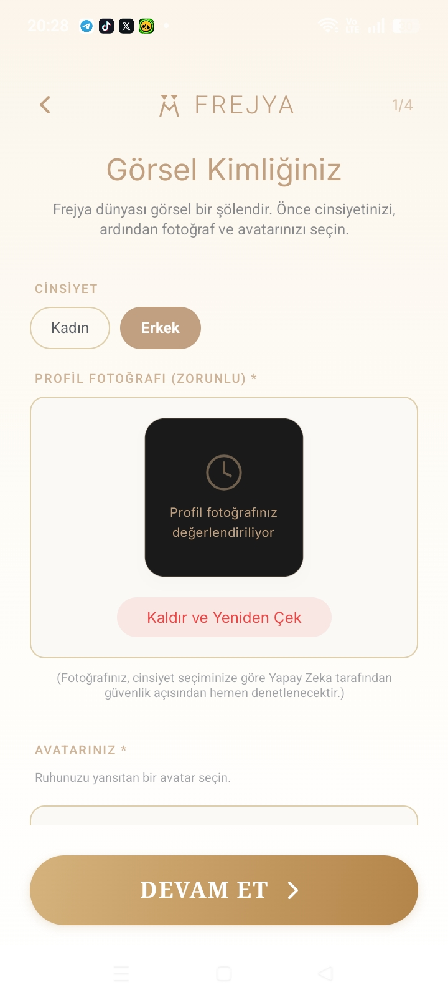
04 Frejya Aura — sosyal akış
Hiyeroglif paylaşımlar · Sözsüz iletişimFrejya Aura, Frejya'nın sosyal akışıdır. Buradaki paylaşımlar metin değil — ikonlardan oluşan sembolik bir dil kullanır.
- 32 ana kategoriden (kahve, müzik, yolculuk, kitap, yemek, doğa…) ikonlar seçersin.
- Her paylaşım en fazla 12 ikondan oluşur ve bir cümle gibi okunur.
- Bir zaman dilimi seç: Her paylaşımına Bugün, Bu hafta veya Gelecek mevsim etiketi koyabilirsin. Böylece bugün yapacağını, bu hafta uzanacağın yeri ya da gelecek mevsime dair hayalini sembollerle anlatırsın. Aura akışı bu etikete göre öncelik verir — yakın olan önce, uzak olan sonra görünür.
- Paylaşımına başkaları kalp bırakır, yorum yazar veya hashtagleri üzerinden seni keşfeder.
- Profilinde en fazla 50 paylaşım tutulur (Premium'da 100). Yeni paylaşım eklediğinde en eski silinir.
- Aura akışındaki gönderiler son 20 paylaşımının hashtag'leri üzerinden eşleşme algoritmasına da girer — yani ne paylaşırsan, kimle eşleşirsen.
- İkonlarla filtrele: Aura'nın Genel sekmesindeki arama çubuğuna dokunup en fazla 5 ikon seçersin; yalnızca o ikonların hepsini birden içeren paylaşımlar listelenir (AND mantığı).
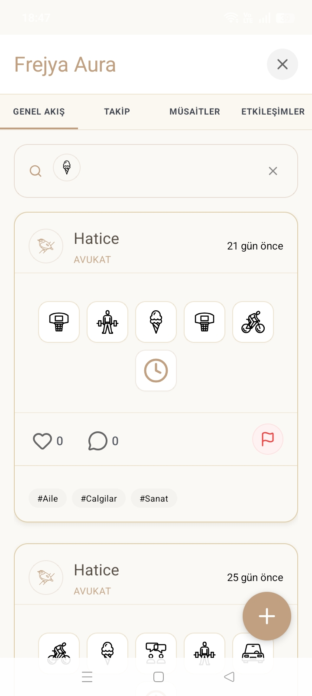
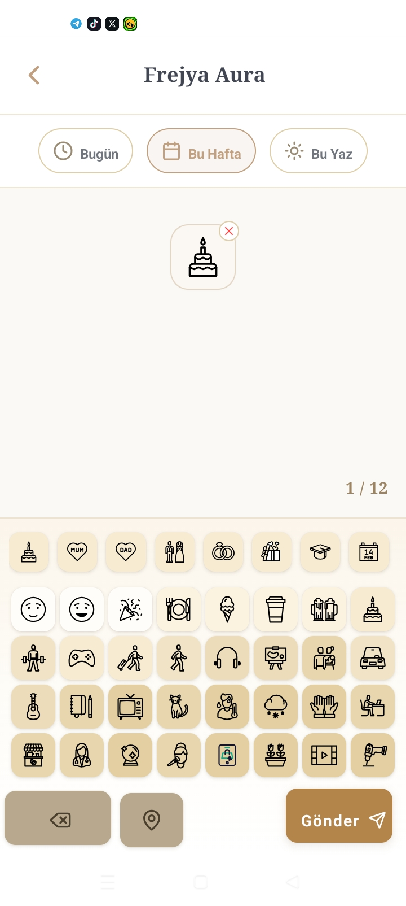
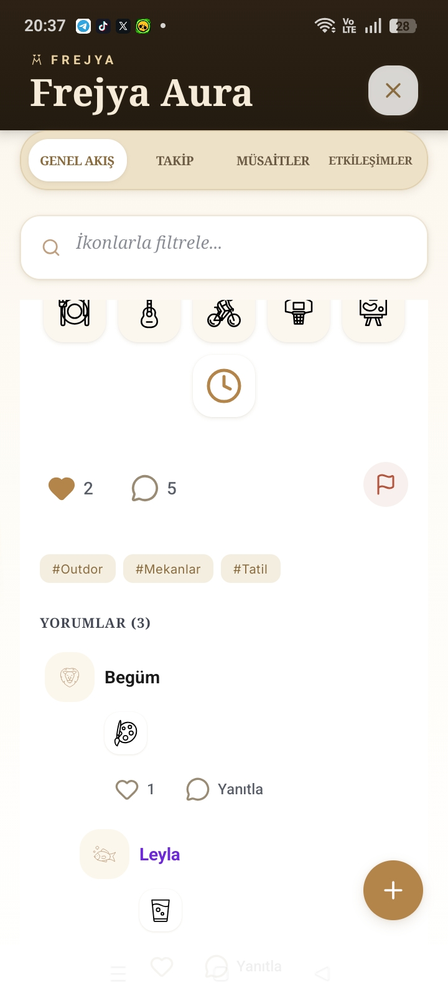
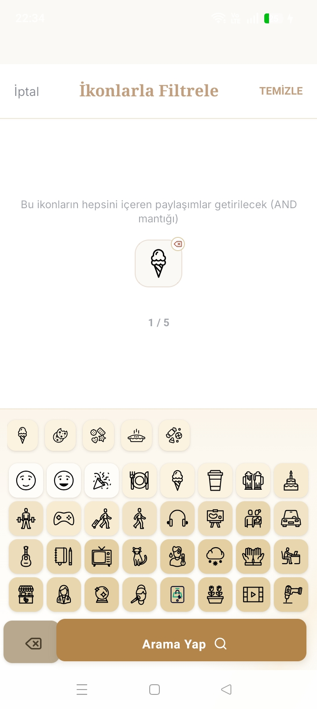
05 Keşfet ve eşleş
Detaylı arama · Karakter uyumuDetaylı Arama ekranında yaş, boy, şehir, eğitim ve meslek filtrelerini ayarlayıp en uyumlu kişileri görürsün. Sonuçlar bir tek aramada gelir; sayfa numaralarıyla aralarında gezersin.
Algoritma şu unsurlara göre uyumu hesaplar:
- Psikolojik karakter tipi uyumu
- Ortak ilgi alanları ve hashtag örtüşmesi
- Yaş, şehir, eğitim, meslek uyumu
- İki taraf için karşılıklı uyum (sen onu beğenirken o da seni beğenmeli)
- Aktiflik (son ne zaman uygulamayı açtı)
Sonuçlarda her aday bir profil kartı olarak görünür. Üzerine basıp profilini incelersin; rakam veya yüzde gösterilmez — Frejya bunun yerine paylaşılan somut özellikleri öne çıkarır.
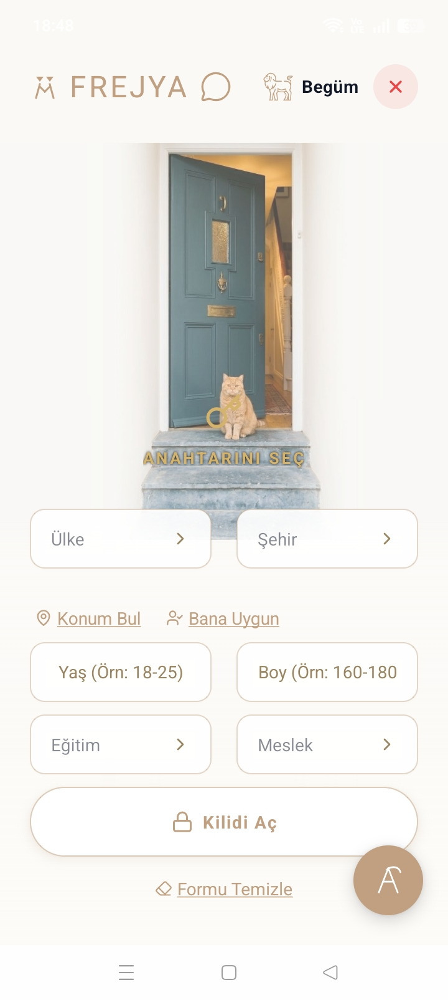
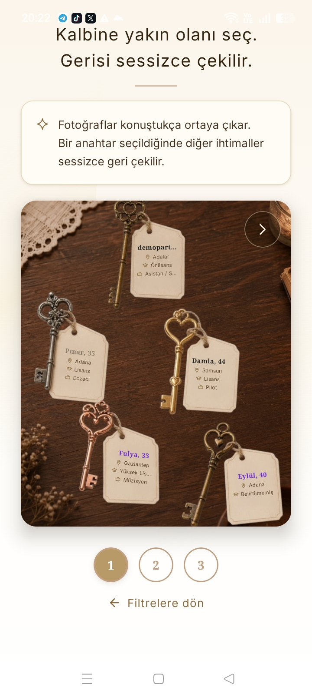
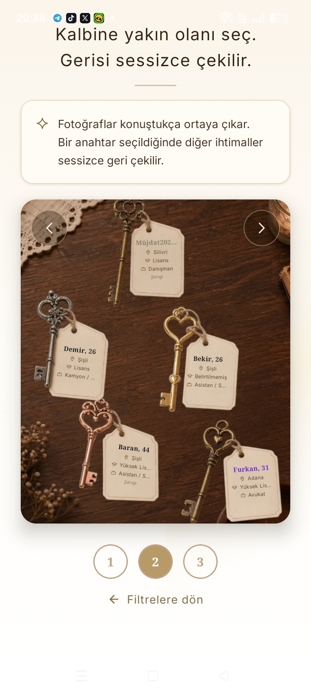
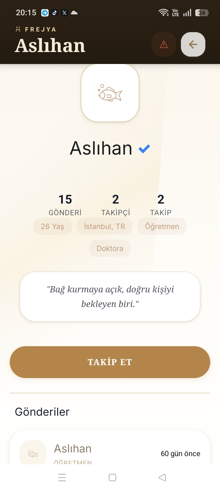
06 Zil çal — kapıyı çal
Davetli sohbet · Karşılıklı rızaBirini beğendiysen önce takip eder, sonra profil kartından zilini çalarsın. Karşı tarafa bildirim gider ve kimin çaldığını görür; kabul edip etmemek ona kalmıştır.
- Karşı taraf "Kapıyı Aç" derse sohbet başlar.
- Reddederse veya görmezden gelirse zil sessizce kaybolur — kim olduğun ona bildirilmez.
- Aynı kişiye art arda zil çalamazsın: aynı kişiye günde en fazla 10 zil, ayda en fazla 100 zil. Aralarda 5 dakika beklersin.
- Günlük toplam zil hakkın üyelik katmanına bağlıdır (aşağıda).
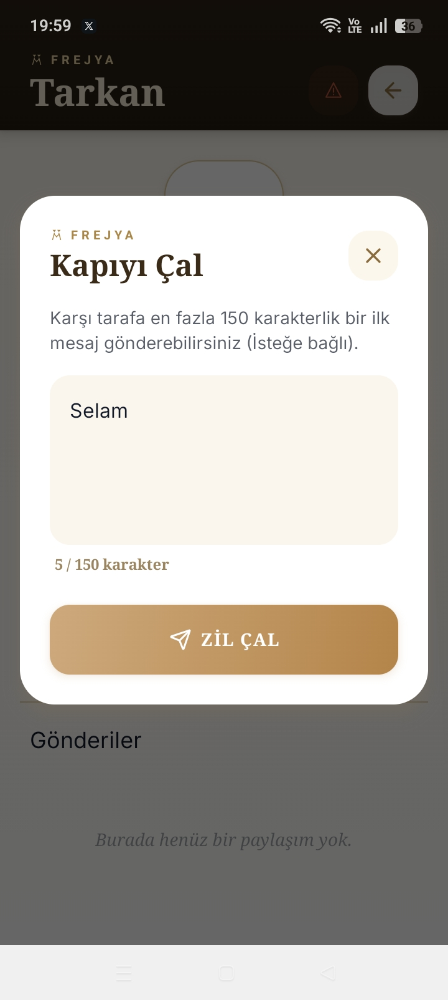
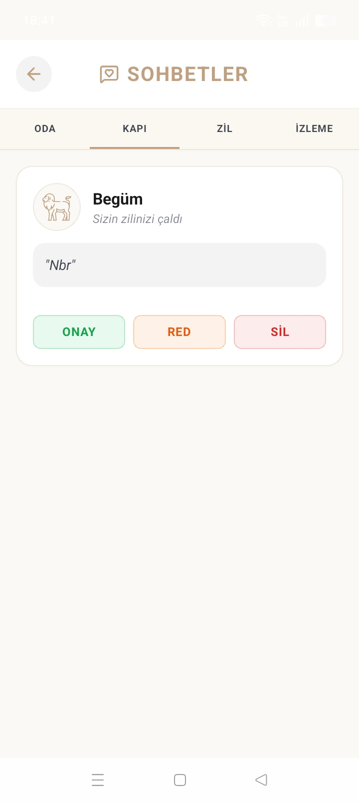
07 İzleme — sohbete uygun olanlar
Takip ettiklerinin uygunluk durumu · Sessiz davetSohbetler ekranında İZLEME sekmesi, takip ettiğin kişilerden şu an sohbete açık olanları listeler. Sohbette olan kişiler bu listede gözükmez — sohbetlerini bitirip uygun hâle geldiklerinde otomatik düşerler.
- Müsait olma bildirimi: Takip ettiğin biri sohbetini bitirip uygun hâle gelince haber alırsın. Bildirim İzleme sekmesindeki rozetle görünür; uygulama arka plandaysa veya kapalıysa işletim sistemi bildirimi düşer.
- Zil çal — geri al: Zil sekmesinde çaldığın bir zili geri alırsan, karşı taraf aktif mesajlaşmada değilse İzleme listene tekrar düşer. Sohbetteyse listede yer almaz; sohbet bitince düşer.
- Sohbette olana zil çalmak yasak değildir: İzleme listesinde gözükmese bile profil sayfasından zilini çalabilirsin. Kişi sohbetini bitirdiğinde kapısına bıraktığın zil bekler.
- Sessiz akış: İzleme sekmesinde sayı rozeti çıkar; sohbetteyken veya sekme zaten açıkken bastırılır. Ayrıca Sohbetler ikonu üzerinde küçük bir kırmızı nokta uyarı verir.
Sana düşen tüm uygulama bildirimlerini Profilim ekranındaki Uygulama Bildirimleri sekmesinden geçmişe dönük görebilirsin — sohbetin sonlanması, fotoğraf onayı veya reddi gibi kararlar burada tarihiyle durur.
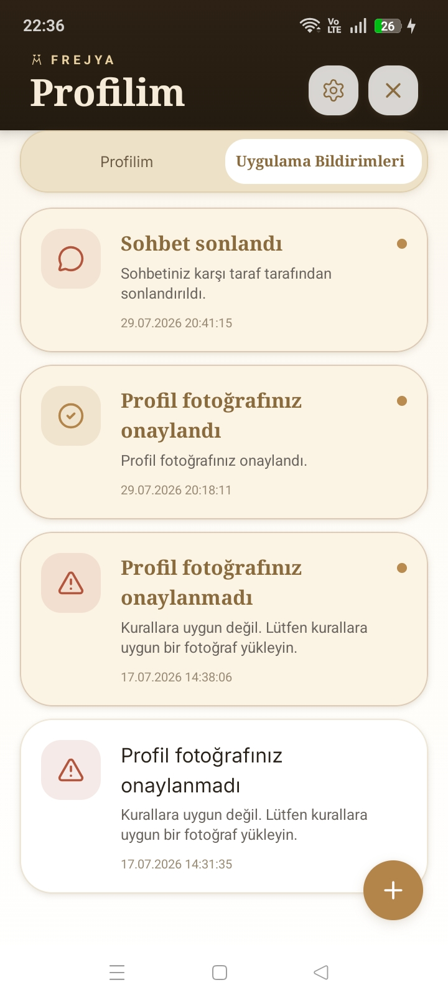
08 Sohbet ve kazıma
Karşılıklı emek · Fotoğraf perdesiKonuştukça tanırsın. Tanıdıkça görürsün. Sohbet açıldığında karşı tarafın fotoğrafı karanlık bir perdenin arkasındadır; mesajlaştıkça perde adım adım kazınır ve fotoğraf yavaş yavaş açılır.
- Karşılıklı sohbet ettikçe perde küçük küçük açılır — emek karşılığı keşif.
- Kazıma karşılıklıdır: ikiniz de karşı tarafın perdesini kendi parmağınızla kazırsınız. Ama perdeyi kazıma hakkı kazanmak için iki tarafın da sohbete katılıp yazması gerekir — biri sessiz kalırsa kimse perdeyi açamaz.
- Yazılı mesajlar uçtan uca şifrelenir (E2EE) — Frejya sunucusu, çalışanları veya başka kimse içeriği okuyamaz. Sesli mesajlar yalnızca sohbetin iki tarafına açık özel depoda tutulur.
- İstediğin zaman "Bitir" diyerek sohbeti sonlandırırsın ve iki seçenek çıkar: Sadece bitir (mesajlar arşivlenir ve 15 gün içinde silinir, birbirinizi takipten çıkarsınız, ikiniz tekrar müsait olursunuz) ya da Bitir ve engelle (kişiyi kalıcı engellersin, bir daha karşılaşmazsınız).
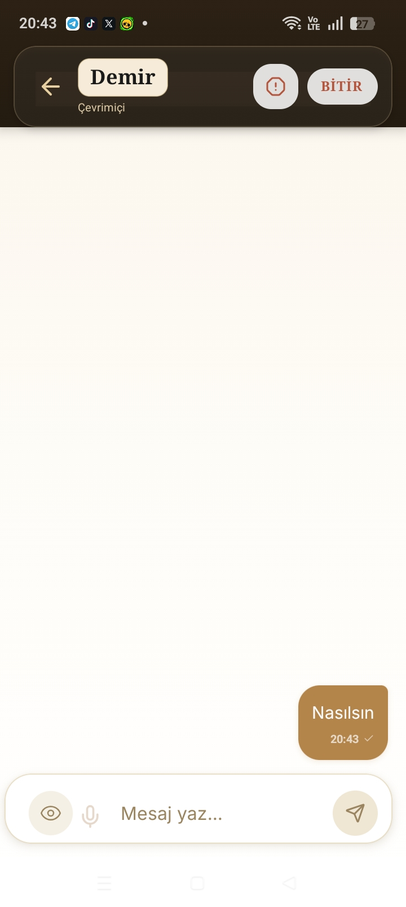
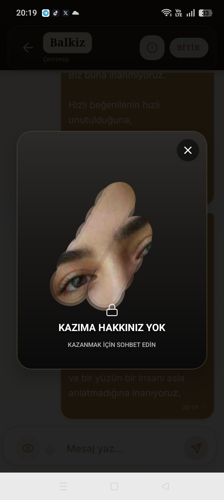
09 Sesli mesaj
Perde açıldıktan sonra · 15 gün ömürSohbette sesli mesaj göndermek için iki tarafın da 9 kazıma hakkını harcamış olması gerekir — perdenin görünür şekilde açılmış olması tek başına yetmez. Bu, sesinin gerçek bir tanışıklığa kavuştuğunda anlam kazanmasını sağlar.
Perde tam açıldığında mikrofon ikonu aktifleşir. Sesli mesajlar da metin mesajları gibi uçtan uca şifrelenir.
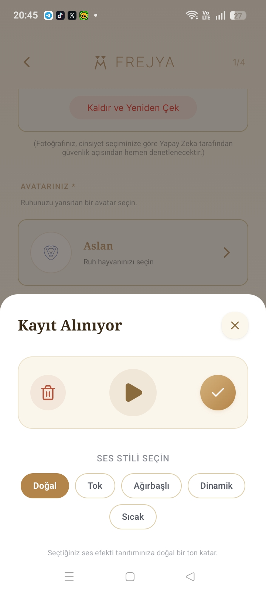
10 Arkadaş sohbeti — kız kıza / erkek erkeğe
Romantik sohbetten bağımsız · kazıma yokFrejya'da romantik sohbetinin yanında, aynı cinsten yakın bir arkadaşınla bundan bağımsız tek bir sohbet yürütebilirsin. Sohbetler ekranında Oda sekmesinin altındaki satıra dokunur, arkadaşının e-posta adresini yazıp çağırırsın. Davetin ona Kapı sekmesinde görünür; kabul ettiğinde sohbet Oda'da açılır ve satırda ARKADAŞ etiketi yer alır.
Burada fotoğraf kazıma yoktur — arkadaşını zaten tanıyorsun. Aynı sebeple sesli mesaj ilk andan itibaren açıktır. Günde 5 davet gönderebilirsin; yanıtlanmayan bir davet 15 gün sonra kendiliğinden düşer. Bu sohbet romantik tarafını hiç etkilemez: zil almaya, aramada ve akışta görünmeye devam edersin.
11 Güvenlik ve gizlilik
E2EE · AI moderasyon · Engelle/şikayet- Uçtan uca şifreleme: Mesajların yalnızca seninle karşı tarafın görür. Sunucu okuyamaz.
- AI fotoğraf moderasyonu: Her yüklenen fotoğraf yapay zekâ ile denetlenir — sahte profil, çıplaklık, çocuk fotoğrafı, ünlü fotoğrafı ve uygunsuz içerik filtrelenir.
- Şikayet ve engelleme: Dört ayrı yol var. 1) Bir profilin sağ üstündeki uyarı işareti "Engelle ve Bildir" diyaloğunu açar — kişiyi hem kalıcı engeller hem moderasyona bildirir. 2) Sohbet başlığındaki uyarı işareti "Şikayet Et" formunu açar (en fazla 150 kelime): şikayetin moderasyon ekibine gider, sohbet sonlandırılır ve kişi kalıcı olarak engellenir. 3) Sohbeti bitirirken "Bitir ve engelle" seçeneği vardır. 4) Kişiye bağlı olmayan sorunlar için Ayarlar › Destek / Şikayet İlet formunu kullanırsın. Engellediğin kişi seni aramada, akışta ve bildirimlerde bir daha göremez.
- Konum gizliliği: Frejya konum izni ister ama yalnız il/ilçe bilgini saklar; koordinatın kaydedilmez. Bu bilgi yalnız eşleşme için kullanılır.
- Biyometrik veri cihazında kalır: Parmak izin veya yüz verin asla Frejya sunucusuna gönderilmez; doğrulama tamamen telefonunun güvenli donanımında yapılır. Çıkış, ban veya şifre değişiminde cihazdaki giriş anahtarı silinir.
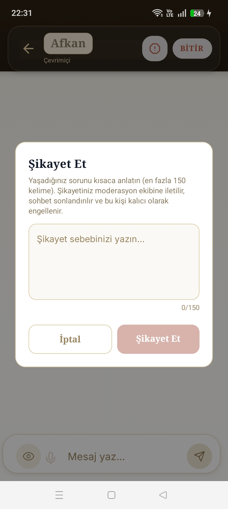
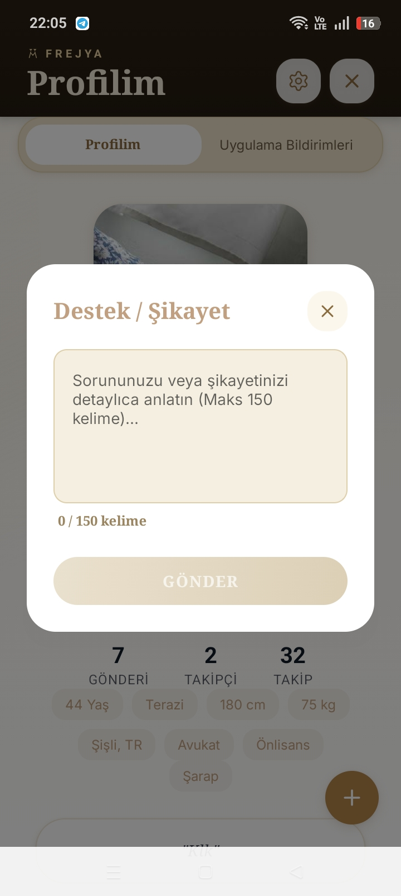
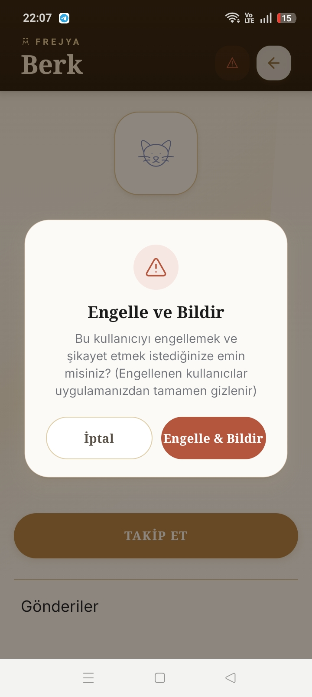
12 Üyelik katmanları
Normal · Onaylı · PremiumFrejya üç üyelik katmanına sahiptir. Tüm temel özellikler her üç katmanda da çalışır — Premium hem günlük etkileşim limitlerini (zil, arama sonucu) hem de toplam yığın limitlerini (post sayısı, takip listesi büyüklüğü) artırır.
| Özellik | Normal | Onaylı* | Premium |
|---|---|---|---|
| Zil hakkı (Günlük) | 7 | 10 | 20 |
| Detaylı arama sonucu (Günlük) | 10 | 15 | 25 |
| Takip listesi limiti (Genel Toplam) | 100 | 100 | 500 |
| Aura paylaşımı, FIFO (Genel Toplam) | 50 | 50 | 100 |
*Onaylı: E-postanı doğrula (uygulama içinden 6 haneli kod) veya Google/Apple ile giriş yap → otomatik Onaylı olursun. Telefon (SMS) doğrulaması yakında.
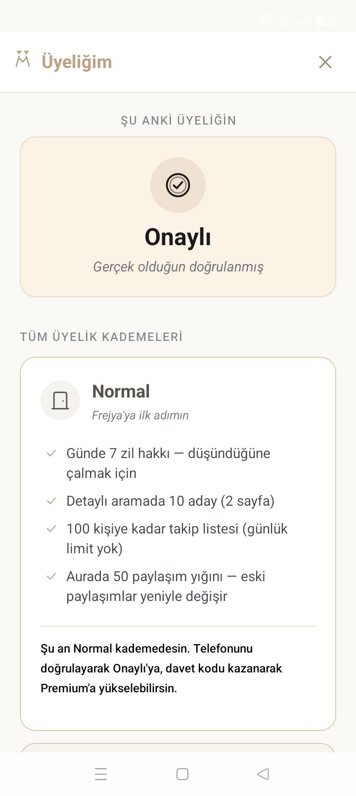
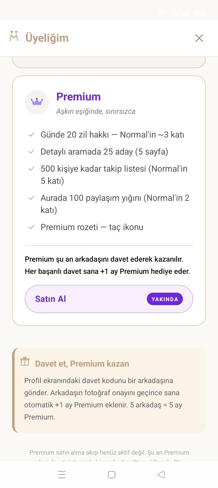
13 Arkadaşını davet et
Her davet 1 ay Premium hediyeProfil ekranında kişisel davet kodun görünür. Bu kodu bir arkadaşına gönderirsin:
- Arkadaşın kayıt olurken kodunu girer.
- Arkadaşının profil fotoğrafı onaylanınca sana otomatik olarak +1 ay Premium eklenir.
- Premium süreleri birikir; en fazla 5 davet ödüllendirilir (toplam 5 ay). Hesabın Onaylı değilse süre biriktirilir, onay verdiğinde uygulanır.
- Çift hesap istismarını engellemek için aynı cihazdan davet edilen hesaplar ödüllendirilmez.
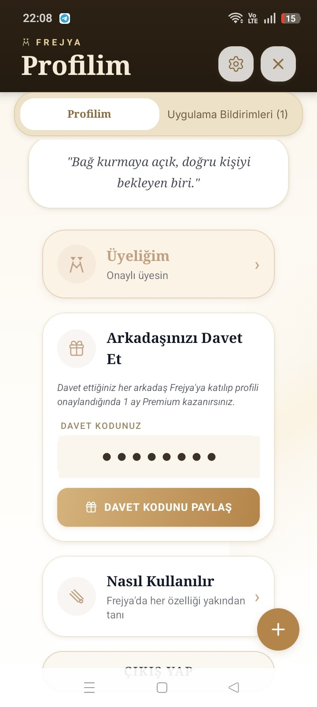
14 Hesabını silme
Hemen silinir · Geri alınamazProfil ekranındaki "Hesabımı Sil" butonuyla hesabını istediğin an silebilirsin. Silme kalıcıdır — onay verdikten sonra geri alınmaz.
- Profilin, fotoğraflarının, mesajlarının, paylaşımlarının ve takipçi listenin tamamı hemen silinir.
- Sonradan fikir değiştirip aynı hesabı geri alamazsın; veriler geri dönüşsüz biçimde kaldırılır.
- Yasal yükümlülükler için (örneğin bir dolandırıcılık şikâyetinin incelenmesi) hesap kaydı 15 gün boyunca anonim tutulur, sonra tamamen silinir. Aynı e-posta ile yeniden kayıt 60 gün boyunca engellidir.
- Frejya'ya tekrar gelmek istersen başka bir e-posta ile hemen, aynı e-posta ile 60 gün sonra yeni bir hesap açabilirsin — ama eski profilin ve geçmiş sohbetlerin geri gelmez.
Verilerinin kullanımı hakkında detayları Gizlilik Politikasında bulabilirsin.
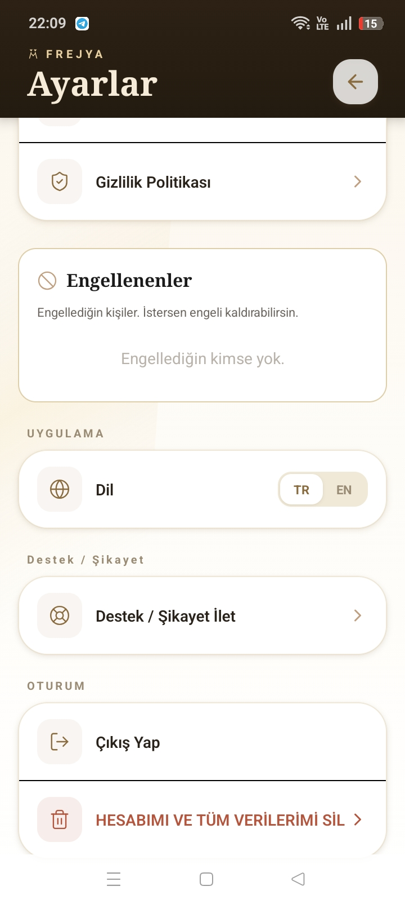